A cada álbum, uma identidade diferente.
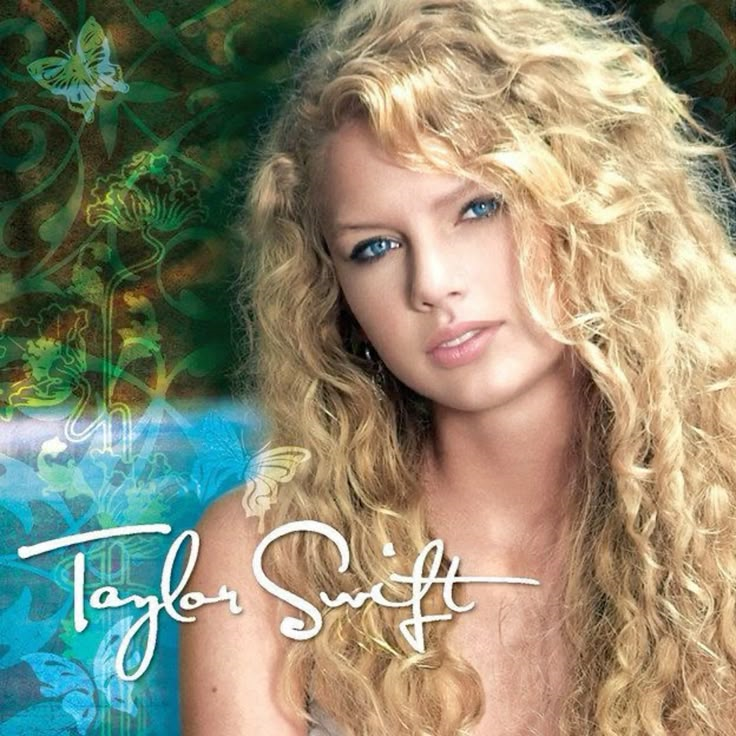
O álbum de estreia foi gravado quando Taylor tinha apenas 14 anos. Ela foi a primeira artista feminina a escrever sozinha um álbum de estreia número 1 nas paradas country dos EUA.
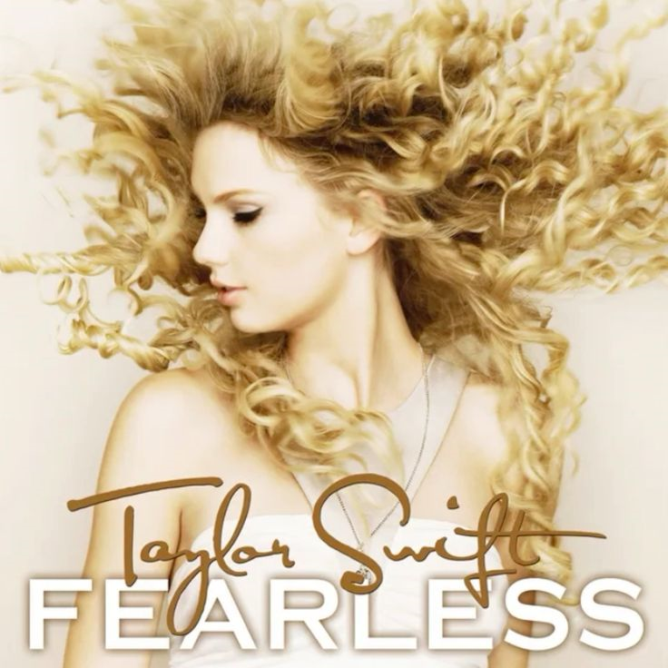
Vencedor do Grammy de Álbum do Ano em 2010, tornando Taylor a artista mais jovem a conquistar o prêmio até então. Ficou 11 semanas no topo da Billboard 200.
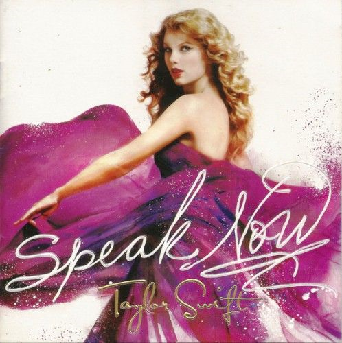
Escrito inteiramente por Taylor, sem nenhum co-escritor, todas as 14 faixas foram compostas por ela sozinha ao longo de dois anos de turnê.
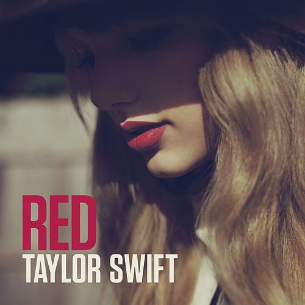
Considerado por muitos o álbum mais emocional de Taylor, vendeu 1,2 milhão de cópias na primeira semana nos EUA. A faixa "All Too Well (10 Minute Version)" se tornou a maior canção já lançada a atingir o #1 nas paradas.
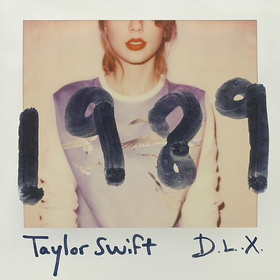
A transição oficial para o pop rendeu o segundo Grammy de Álbum do Ano. "Shake It Off" ficou 50 semanas no top 10 da Billboard Hot 100, um recorde na época.
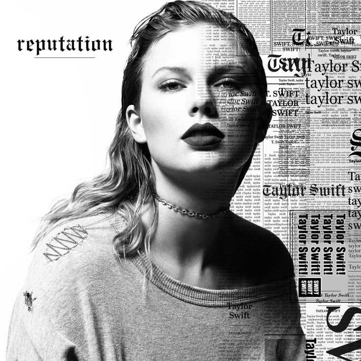
Lançado após um ano de silêncio total nas redes sociais, foi o álbum mais vendido de 2017 nos EUA com 1,216 milhão de cópias na primeira semana. A turnê associada arrecadou mais de 345 milhões de dólares.
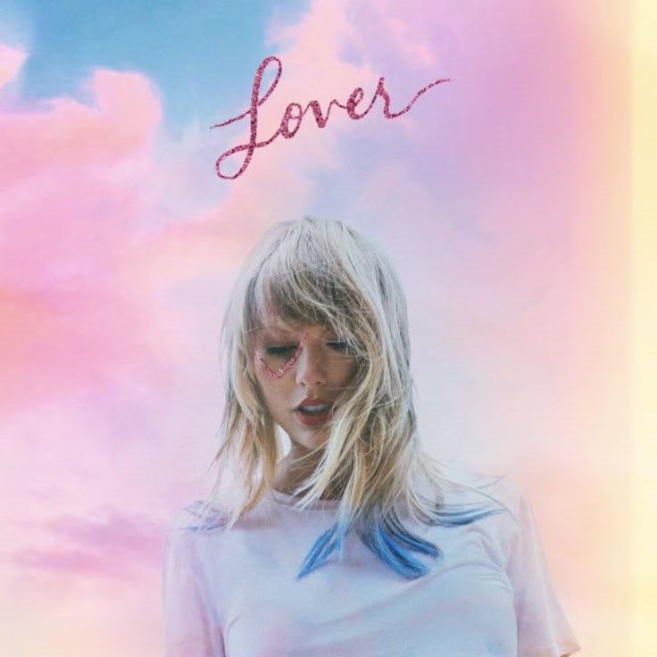
Com 18 faixas, é o álbum mais longo de Taylor. "ME!" e "You Need To Calm Down" foram os primeiros singles com videoclipes lançados simultaneamente à música, quebrando recordes de visualizações em 24 horas.
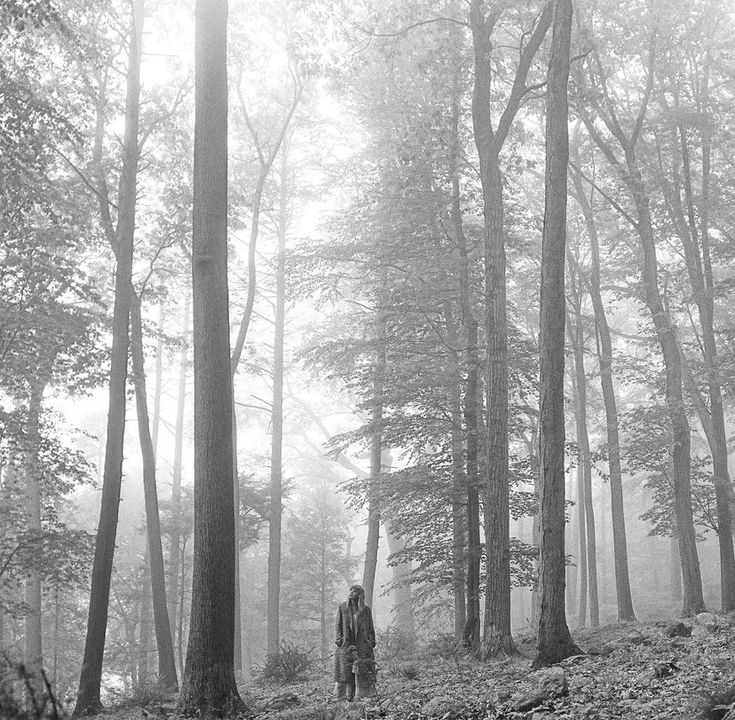
Surpresa anunciada apenas 16 horas antes do lançamento. Rendeu o terceiro Grammy de Álbum do Ano, tornando Taylor a primeira artista solo a vencer o prêmio três vezes. Criado inteiramente durante a pandemia.
Lançado surpresa apenas 5 meses após Folklore, é considerado o "álbum irmão". Taylor descreveu a criação como uma viagem que não queria terminar, e pela primeira vez explorou narrativas de personagens fictícios em profundidade.
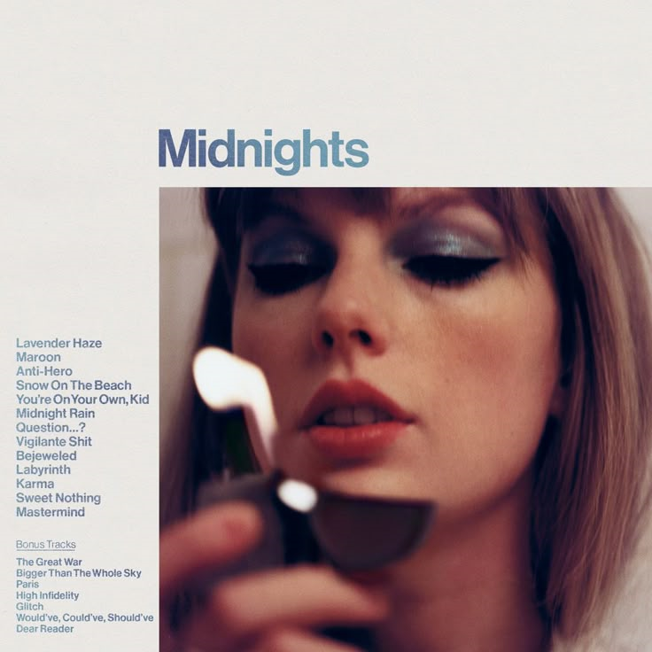
Quebrou o recorde de streams em um único dia no Spotify com 184,6 milhões de reproduções. Venceu o quarto Grammy de Álbum do Ano, tornando Taylor a única artista da história a conquistar o prêmio quatro vezes.
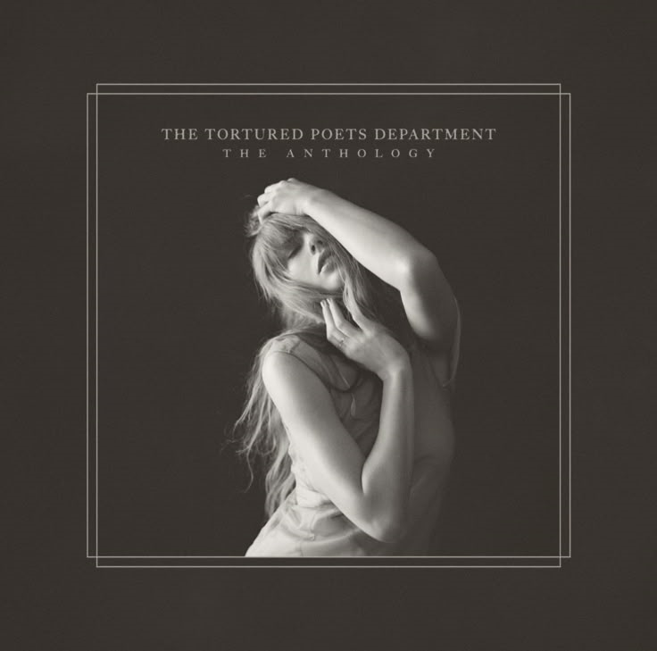
Anunciado durante o Grammy em 2024, foi lançado com uma edição dupla surpresa "The Anthology" com 31 faixas. Quebrou o recorde de streams em um único dia no Spotify logo nas primeiras horas, superando o próprio Midnights.
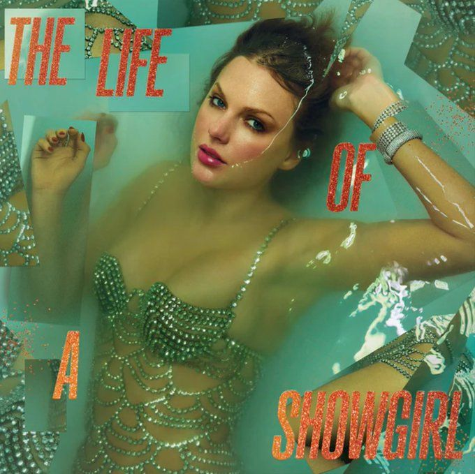
Escrito em 2024 nos bastidores da The Eras Tour, as faixas retratam a sua vida privada fora dos palcos durante a turnê. O álbum deixa de lado o tom melancólico de seu antecessor, The Tortured Poets Department, para apostar em um pop teatral e descontraído.